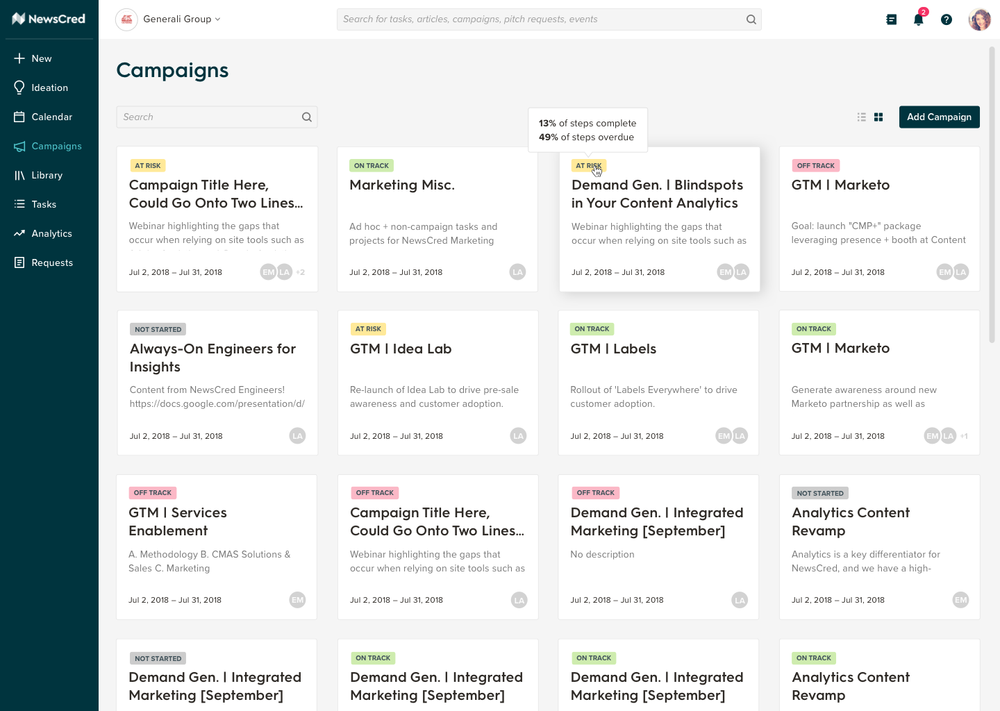
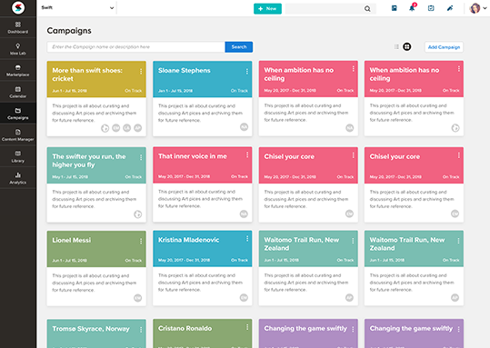
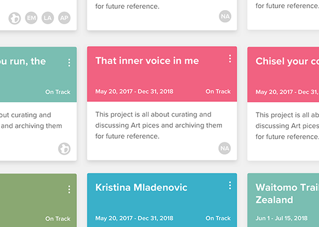
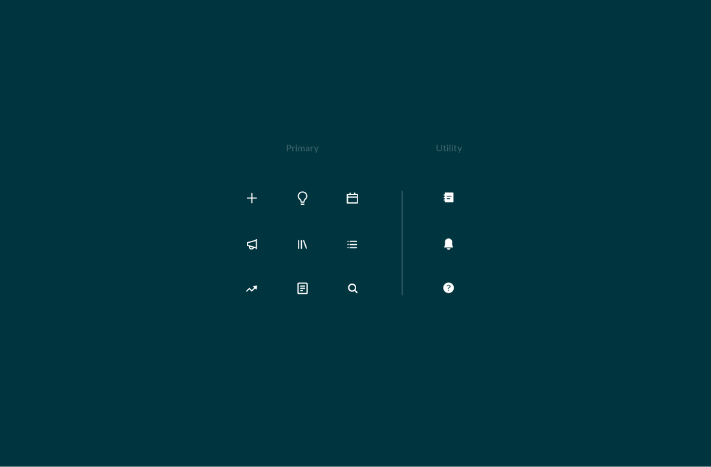

UI
In addition to helping marketers source, publish, and measure the effectiveness of content, NewsCred's Content Marketing Platform also enables global and local marketing teams to work more collaboratively and efficiently. Since fall of 2018, we've introduced some exciting new features, developed a design library, and drastically improved the overall user experience.



